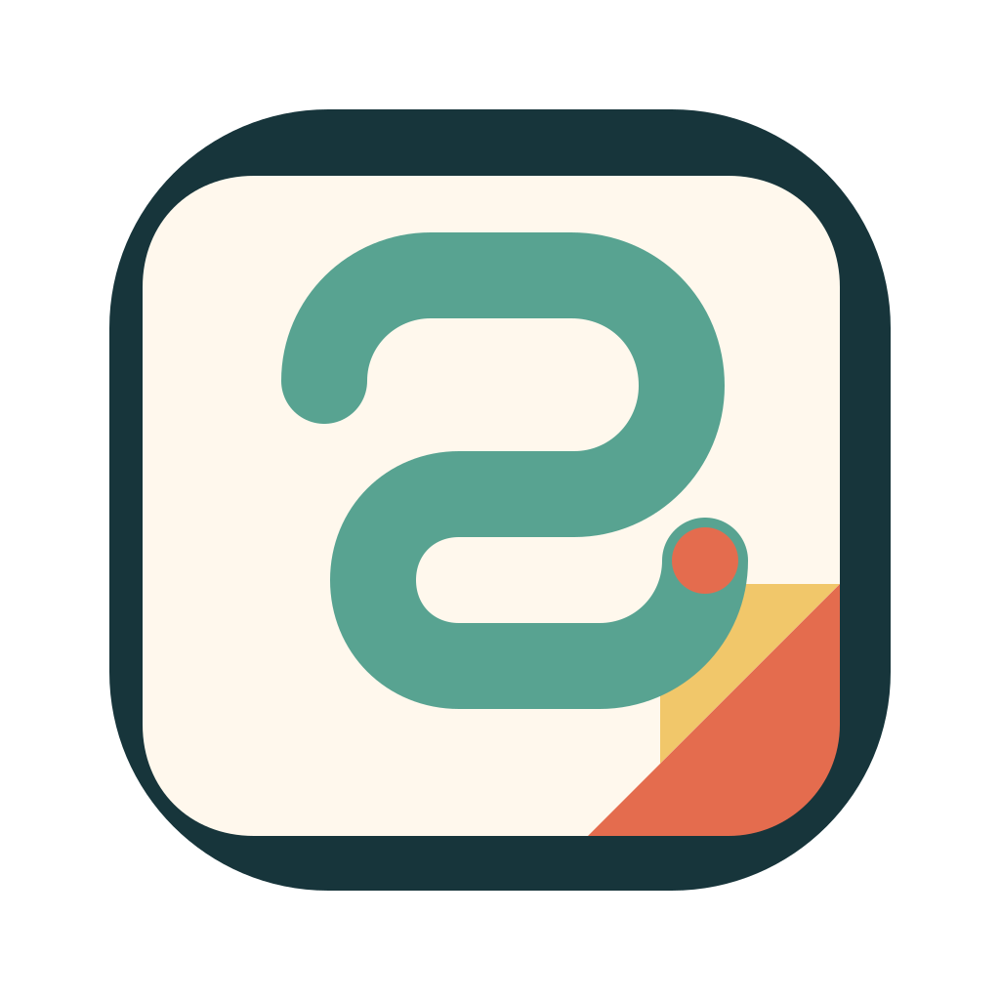

抽象 Logo 方向
这次弱化了“闹钟/时钟”的直译感，改成更适合品牌化的抽象几何。三个方向都保留了一点“日程、卡片、折页、组织感”的影子，但不再把功能直接画出来。

Fold Loop
最均衡的一版。外轮廓稳，内圈是连续规划感，右下折角保留便签影子，但整体已经偏品牌符号。
推荐继续细化Binder Fold
更像轻量效率工具，保留一点日历装订感，但内部改成抽象折带，不再出现时钟图形。
更偏产品气质Stack Sync
层叠卡片的方向，强调多视图、多设备、便签与日程之间的同步关系，最抽象也最像品牌标。
更抽象前卫